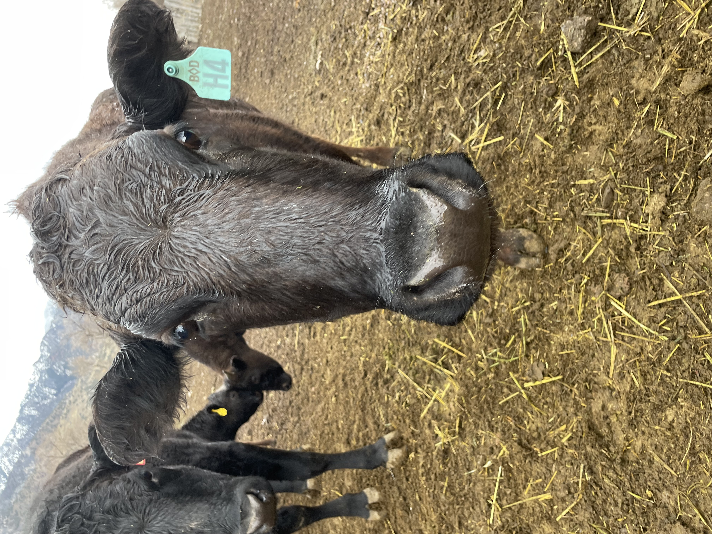

Contact Our Utah Farm
Personal Service from Our Family to Yours
Ready to order premium Utah Wagyu beef? Get in touch with our family farm today.
Call or Text
Phone: 402-217-5291
Phone: 801-301-3850
Phone: 435-239-5465
Call or text our Utah farm to discuss your Wagyu beef order, ask questions, or learn more about our 2.5-year raising process.
Email Us
Send us an email about your premium beef needs and we'll respond from our family farm within 24 hours.
Follow Our Farm
Follow our Utah farm journey on Instagram and TikTok to see daily life raising premium Wagyu cattle.

Meet Our Wagyu Cattle
Every animal on our Utah farm receives individual attention throughout their 2.5-year journey from pasture to plate.
Send Us a Message
Have questions about our Utah Wagyu beef, ordering process, or availability? Fill out the form below and we'll get back to you soon.
Loved Your Wagyu?
Your review helps other Utah families discover premium, farm-raised Wagyu beef. It takes less than a minute and means the world to our small family farm.
Simply click below, sign into Google, and share your experience.
⭐ Leave Us a Google ReviewAlready left a review? Thank you — it helps more than you know.
Our Utah Family Farm Approach
At our Utah farm, we operate on a farming timeline. This means we take the time necessary to provide you with thoughtful, personalized service—the same care and attention we give to raising our Wagyu cattle.

Our cattle are raised with care from day one—the foundation of premium Wagyu beef
We're not a large commercial operation with instant online ordering. We're a Utah family farm that believes in building relationships with the families we serve. When you contact us, you're talking directly with the people who raise your premium beef.
Response Time
We typically respond to inquiries within 24 hours. We may be out on the farm, but we will get back to you.
402-217-5291 | 801-301-3850 | 435-239-5465
Availability
By appointment. We're happy to schedule a time to discuss your Wagyu beef needs, answer questions, or arrange a farm visit to see our operation in Utah's mountains.
Orders & Reservations
Contact us to check current availability and place orders. With our 2.5-year raising period, we also offer pre-sales for future calves on our Utah family farm.
We appreciate your patience and understanding. Quality Utah Wagyu beef—and quality family farm service—takes time.